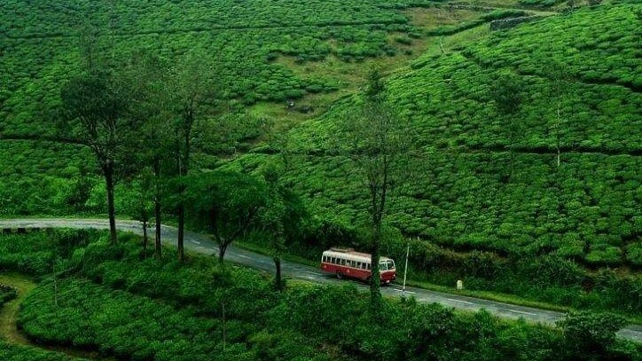
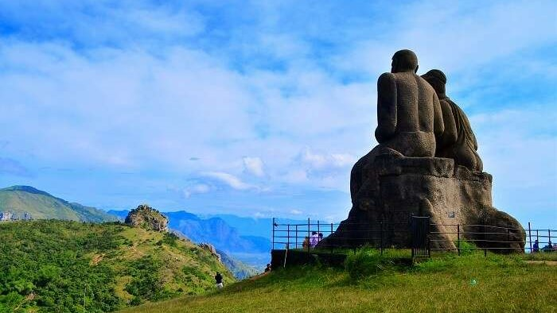

Thiruvananthapuram (or Trivandrum) is the capital of the southern Indian state of Kerala.
Kollam
കൊല്ലം
Kollam is a city in the state of Kerala, on India's Malabar Coast. It’s known as a trade hub and for its beaches

Pathanamthitta
പത്തനംതിട്ട
A district is noted for its temples, rivers, mountain ranges, water fiestas, and heritage villages .
Alappuzha
ആലപ്പുഴ
Alappuzha, famous for its boat races, beaches, marine products and coir industry, is a world renowned backwater tourist destination of India..
Kottayam
കോട്ടയം
The city is an important trading center of spices and commercial crops, especially rubber.

Idukki
ഇടുക്കി
Idukki is one of the greenest districts of Kerala. It is home to the popular Eravikulam National Park and is characterized by the Anamudi mountain.
Eranakulam
എറണാകുളം
It is renowned for its breath-taking beauty overlooking the Arabian Sea with backwater hubs like Kottayam and Alappuzha districts in the south.
Thrissur
തൃശ്ശൂർ
Thrissur is known as the cultural capital of Kerala, and the land of Poorams. The district is known for its ancient temples, churches, and mosques.
Palakkad
പാലക്കാട്
Palakkad is also known as the rice bowl of Kerala. The 18th-century Palakkad Fort has sturdy battlements, a moat, and a Hanuman temple on its grounds.
Malappuram
മലപ്പുറം
Malappuram has made numerous contributions to the cultural heritage of Kerala. A famous centre for Hindu-Vedic learning and Islamic philosophy, the temples and mosques of this region are well known for their spectacular festivals.
Kozhikkode
കോഴിക്കോട്
Kozhikode is a coastal city in the south Indian state of Kerala. It was a significant spice trade center and is close to Kappad Beach, where Portuguese explorer Vasco da Gama landed in 1498.
Wayanad
വയനാട്
This popular town is famous for wildlife and its spice plantations. Wayanad is part of a forest reserve, located on the border of Tamil Nadu and Kerala.
Kannur
കണ്ണൂർ
Kannur is dubbed as the City of Looms and Lores, thanks to the flourishing handloom industry and folk art called Theyyam. Theyyam is a ritualistic artform encompassing dance, music and mime, where the artist dons the guise of God.
Kasaragod
കാസർഗോഡ്
The northernmost district of Kerala, Kasaragod is famous for its handlooms and its 293 kilometre long coastline. With its cultural uniqueness, the place is known as the land of gods. Rich in history, Kasaragod is home to the largest and best preserved fort in the State - Bekal.